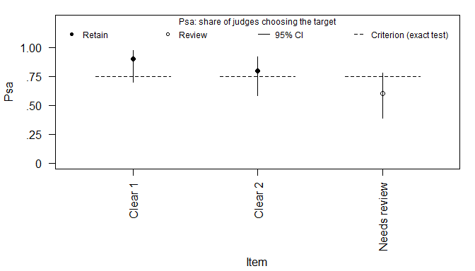

Current stable release: 0.10.1 (on R-universe; CRAN has 0.4.0, see Installation).
Development plans: Roadmap · Future research · Open issues. Documentation: Package website · Changelog.
contentvalidR analyzes the content-validity evidence that judges and experts provide before a scale reaches respondents: whether each item represents the construct it was written for, whether a panel agrees on it, whether the conclusions depend on who sat on the panel, and whether the items cover the domain at all. Every analysis prints its verdict first, reports its numbers in APA style, and explains each index it shows, so the output can be read without first consulting the source papers.
Quantitative content-validity statistics are one part of a broader validity argument. They complement, rather than replace, construct definition, domain coverage, qualitative expert feedback, cognitive interviewing, and other evidence about relevance, comprehensiveness, and comprehensibility.
Installation
Install from CRAN:
install.packages("contentvalidR")CRAN is updated less often than GitHub, because it asks packages to update no more than every one to two months, so its version can trail the newest release. To install the newest stable release, use the JUhalt R-universe:
install.packages(
"contentvalidR",
repos = c(
"https://juhalt.r-universe.dev",
"https://cloud.r-project.org"
)
)Install the current development version directly from GitHub:
# install.packages("remotes")
remotes::install_github("JUhalt/contentvalidR")A first analysis
Twenty judges sorted three items, each written for construct A, into the construct each one best represents:
library(contentvalidR)
sort_dat <- data.frame(
item = rep(c("Clear 1", "Clear 2", "Needs review"), each = 20),
rater = rep(1:20, 3),
target_construct = "A",
assigned_construct = c(
rep("A", 18), rep("B", 2),
rep("A", 16), rep("B", 4),
rep("A", 12), rep("B", 8)
)
)
fit <- sort_validity(sort_dat)
fit
#> contentvalidR item-sort analysis
#> --------------------------------
#> Items: 3 | Judges: 20 | Target constructs: 1
#> Test: Howard-Melloy exact target-count test (p0 = .50, alpha = .05)
#> Judges: naive, meaning drawn from the kind of people who will answer the
#> items.
#>
#> 2 of 3 items meet the exact target-assignment criterion.
#> Flagged for review: Needs review
#>
#> Item-level evidence
#> item target decision judges Psa 95% CI Csv competitor p
#> Clear 1 A Retain 18/20 .90 [.70, .97] .80 B < .001
#> Clear 2 A Retain 16/20 .80 [.58, .92] .60 B .006
#> Needs review A Review 12/20 .60 [.39, .78] .20 B .252
#>
#> judges: assignments to the target construct, out of the judges who sorted the
#> item.
#> 95% intervals for proportions: Wilson score (the default). Newcombe (1998)
#> compared seven methods and recommends score intervals over the Wald interval.
#> An interval reflects how few ratings an item received, not whether the right
#> judges were chosen.
#>
#> Scale-level Colquitt benchmarks
#> target items mean Psa Psa level mean Csv Csv level
#> A 3 .77 Moderate .53 Moderate
#> Benchmark set: Overall (not correlation-normed)
#>
#> Colquitt labels are empirical percentile norms derived from scale-level
#> averages, not universal cutoffs or automatic scale-retention rules. They
#> place a scale against published scales; Psa and Csv sit on different scales,
#> so their labels are not comparable with each other.
#>
#> What these columns mean
#> Psa -- Proportion of Substantive Agreement. Share of judges who put the
#> item in the construct it was written for (0 to 1; higher is
#> stronger).
#> 95% CI -- Interval for Psa. Wider when fewer judges sorted the item; the
#> method is named above.
#> Csv -- Coefficient of Substantive Validity. How much more often judges
#> chose the intended construct than its closest rival (-1 to 1; 0 is a
#> tie).
#> competitor -- Strongest competing construct. The construct other than the
#> intended one that judges chose most often.
#> p -- Howard-Melloy exact test. Probability of at least this many target
#> assignments if each judge picked the target at rate p0; compare with
#> alpha.
#>
#> What the decisions mean
#> Retain -- met the exact target-assignment criterion.
#> Review -- did not meet the exact target-assignment criterion; the
#> competitor column shows where judges put it instead.
#>
#> Full definitions: contentvalid_glossary(). To hide this key:
#> options(contentvalidR.show_key = FALSE).
#>
#> 'Review' is not an automatic deletion decision. Use theory, construct-domain
#> coverage, item wording, and qualitative judge feedback alongside these
#> statistics.The verdict comes first: two items meet the exact test of Howard and Melloy (2016), and one is flagged for review. Review is not a decision to delete; it marks an item to look at again, together with what the judges wrote about it.
For a manuscript, content_report() gives the same evidence as an APA table, and format = "markdown" writes it for Quarto or R Markdown:
content_report(fit)
#> item target judges competitor Psa 95% CI Csv p decision
#> Clear 1 A 18/20 B .90 [.70, .97] .80 < .001 Retain
#> Clear 2 A 16/20 B .80 [.58, .92] .60 .006 Retain
#> Needs review A 12/20 B .60 [.39, .78] .20 .252 Reviewplot() draws each item’s share of judges with its interval, against the share the exact test needs for that item:
plot(fit)
summary(fit) condenses the result to the items that need attention, and content_handoff(fit) carries the retained items into the analysis of response data. There is deliberately no helper returning “the items that passed”: filtering on status is a substantive decision that belongs in your own visible code.
Which workflow answers your question
| Question put to judges or experts | Workflow | Built on | Guide |
|---|---|---|---|
| Which construct does each item belong to? | sort_validity() |
Anderson & Gerbing (1991); Howard & Melloy (2016); Colquitt et al. (2019) | Item sorts |
| How well does each item match each construct definition? | rating_validity() |
Hinkin & Tracey (1999); MacKenzie et al. (2011); Colquitt et al. (2019) | Construct ratings |
| Is each item relevant, essential, or matched to its objective? | expert_validity() |
Aiken (1980); Lawshe (1975); Lynn (1986); Polit et al. (2007); Rovinelli & Hambleton (1977) | Expert panels |
| Has a Delphi panel reached consensus, and stopped changing? | delphi_validity() |
Holey et al. (2007) | Delphi rounds |
| Do the conclusions depend on the particular judges? | judge_validity() |
Crocker et al. (1988); Engelhard (1994) | Reading the output |
| Do the items cover the blueprint? | domain_validity() |
Sireci & Geisinger (1992) | Reading the output |
The first four ask whether each item behaves as intended or, in a Delphi study, whether the panel has settled on it. The last two ask questions no item-level index can reach: whether your conclusions depend on the particular judges you recruited, and whether your item set covers the domain you set out to measure. An item can only be rated if someone wrote it, so a perfect relevance index says nothing about the facet you forgot.
How many judges or experts to recruit is answered exactly, rather than by a rule of thumb, by sort_power(), expert_power(), and gtheory_content(); see Design and reporting. When the items move on to response data, content_handoff() carries them and their evidence; see the handoff guide and one item set through both stages. New users can start with Getting started.
Reading the output
Every print opens with its verdict and reports numbers as the APA Publication Manual (7th ed.) prescribes: no leading zero on values that cannot exceed 1, p to three decimals, and intervals as [LL, UL]. A short key under each result explains only the columns and decisions it shows. contentvalid_glossary() has the full definitions, and options(contentvalidR.show_key = FALSE) hides the key once the terms are familiar. See Reading the output.
What every workflow returns
All six workflows return an object with the same parts:
-
results: the evidence at the workflow’s unit of analysis, one row per item forsort_validity(),rating_validity(),expert_validity(), anddelphi_validity(), per judge forjudge_validity(), and per blueprint cell fordomain_validity(); -
scale_summary: target-scale or panel-level evidence; -
settings: the analysis choices, which a report should state; -
design: sample size, missingness, and design metadata; and -
details: method-specific supporting results.
Every results table has a status column with the shared categories Supported, Review, Insufficient data, and Descriptive only, beside the method’s own recommendation word, such as Retain in an item sort.
What you can rely on
The six workflows, the object contract they share, and the handoff to empirical validation are stable: breaking changes wait for a major version and never arrive without a deprecation cycle. Component indices and planning helpers are supported to the same standard and may gain arguments. Auxiliary and compatibility helpers may be deprecated with one minor release of warning. A changed default is treated as a breaking change, because it can silently change published numbers. See ?contentvalidR for the full policy.
Examples, reporting, and citation
Five deterministic example data sets, covering the item-sort, construct-rating, relevance, essentiality, and congruence input shapes, are installed as CSV files, for example system.file("extdata", "sort_example.csv", package = "contentvalidR"). Four more files hold the one item set the walkthrough follows through every stage: its items, the sort, the expert ratings, and the responses. vignette("reporting-examples") gives methods and results scaffolds and a minimum reproducibility statement.
Cite the package with citation("contentvalidR"). The reference list below is also installed in BibTeX form: system.file("REFERENCES.bib", package = "contentvalidR").
The handoff to nomologR
Content review decides which items go on to be tested with response data. content_handoff() packages that decision so the empirical stage can pick it up without retyping anything, and nomologR is the partner package that reads it. A handoff carries:
- the items carried forward, and the items held back, each with its status, its recommendation, and the rule that made the decision;
- the scales, where the design maps items to constructs;
- each item’s statistics, with their intervals and criteria, and the panel’s agreement where one was computed;
- two facts about the instrument that only you know: which items are reverse-worded (
reverse_keyed, orcharacter(0)if you checked and none is) and the response scale respondents will answer on (response_scale).
h <- content_handoff(fit, reverse_keyed = character(0), response_scale = c(1, 5))
h$items
#> [1] "Clear 1" "Clear 2"Once responses are collected, pass the handoff itself to nomologR, not h$items, so the keying and the reasons for anything held back travel with the items:
library(nomologR)
nomo_screen(responses, items = h) # screens the carried items
nomo_run(responses, scales = h) # runs the empirical stage on the handoff's scalesReading a handoff. Take each item’s decision from carried and status; never re-derive it by comparing a statistic with its criterion, or by branching on the version that produced it. recommendation states the same decision in the workflow’s own words and, like rule, is prose. A keying of NA means nobody said, never that an item is forward-worded.
Versions. The handoff is schema version 1, frozen since 0.7.0: its fields and columns keep their names, positions, and types, and new optional ones may only be added at the end. A change that broke this would be schema version 2, produced beside version 1 for at least a release cycle. The reader in nomologR is tested against handoffs from contentvalidR 0.6.0 through 0.10.1, and neither package depends on the other. See ?content_handoff for the full contract, vignette("handoff-to-empirical-validation") for a guide, and vignette("one-item-set-both-stages") for the joint walkthrough.
References
Works cited in this README, the help pages, and the vignettes.
- Agresti, A., & Coull, B. A. (1998). Approximate is better than “exact” for interval estimation of binomial proportions. The American Statistician, 52(2), 119–126. https://doi.org/10.1080/00031305.1998.10480550
- Aiken, L. R. (1980). Content validity and reliability of single items or questionnaires. Educational and Psychological Measurement, 40(4), 955–959. https://doi.org/10.1177/001316448004000419
- Anderson, J. C., & Gerbing, D. W. (1991). Predicting the performance of measures in a confirmatory factor analysis with a pretest assessment of their substantive validities. Journal of Applied Psychology, 76(5), 732–740. https://doi.org/10.1037/0021-9010.76.5.732
- Ayre, C., & Scally, A. J. (2014). Critical values for Lawshe’s content validity ratio: Revisiting the original methods of calculation. Measurement and Evaluation in Counseling and Development, 47(1), 79–86. https://doi.org/10.1177/0748175613513808
- Brennan, R. L. (2001). Generalizability theory. Springer. https://doi.org/10.1007/978-1-4757-3456-0
- Chaffin, W. W., & Talley, W. K. (1980). Individual stability in Delphi studies. Technological Forecasting and Social Change, 16(1), 67–73. https://doi.org/10.1016/0040-1625(80)90074-8
- Clopper, C. J., & Pearson, E. S. (1934). The use of confidence or fiducial limits illustrated in the case of the binomial. Biometrika, 26(4), 404–413. https://doi.org/10.1093/biomet/26.4.404
- Cohen, J. (1968). Weighted kappa: Nominal scale agreement provision for scaled disagreement or partial credit. Psychological Bulletin, 70(4), 213–220. https://doi.org/10.1037/h0026256
- Colquitt, J. A., Sabey, T. B., Rodell, J. B., & Hill, E. T. (2019). Content validation guidelines: Evaluation criteria for definitional correspondence and definitional distinctiveness. Journal of Applied Psychology, 104(10), 1243–1265. https://doi.org/10.1037/apl0000406
- Crocker, L., Llabre, M., & Miller, M. D. (1988). The generalizability of content validity ratings. Journal of Educational Measurement, 25(4), 287–299. https://doi.org/10.1111/j.1745-3984.1988.tb00309.x
- Dajani, J. S., Sincoff, M. Z., & Talley, W. K. (1979). Stability and agreement criteria for the termination of Delphi studies. Technological Forecasting and Social Change, 13(1), 83–90. https://doi.org/10.1016/0040-1625(79)90007-6
- De Boeck, P., & Wilson, M. (Eds.). (2004). Explanatory item response models: A generalized linear and nonlinear approach. Springer. https://doi.org/10.1007/978-1-4757-3990-9
- Diamond, I. R., Grant, R. C., Feldman, B. M., Pencharz, P. B., Ling, S. C., Moore, A. M., & Wales, P. W. (2014). Defining consensus: A systematic review recommends methodologic criteria for reporting of Delphi studies. Journal of Clinical Epidemiology, 67(4), 401–409. https://doi.org/10.1016/j.jclinepi.2013.12.002
- Engelhard, G. (1994). Examining rater errors in the assessment of written composition with a many-faceted Rasch model. Journal of Educational Measurement, 31(2), 93–112. https://doi.org/10.1111/j.1745-3984.1994.tb00436.x
- Feinstein, A. R., & Cicchetti, D. V. (1990). High agreement but low kappa: I. The problems of two paradoxes. Journal of Clinical Epidemiology, 43(6), 543–549. https://doi.org/10.1016/0895-4356(90)90158-L
- Fleiss, J. L. (1971). Measuring nominal scale agreement among many raters. Psychological Bulletin, 76(5), 378–382. https://doi.org/10.1037/h0031619
- Fleiss, J. L., & Cohen, J. (1973). The equivalence of weighted kappa and the intraclass correlation coefficient as measures of reliability. Educational and Psychological Measurement, 33(3), 613–619. https://doi.org/10.1177/001316447303300309
- Gamer, M., Lemon, J., Fellows, I., & Singh, P. (2026). irr: Various coefficients of interrater reliability and agreement (R package version 0.85) [Computer software]. https://doi.org/10.32614/CRAN.package.irr
- Glorfeld, L. W. (1995). An improvement on Horn’s parallel analysis methodology for selecting the correct number of factors to retain. Educational and Psychological Measurement, 55(3), 377–393. https://doi.org/10.1177/0013164495055003002
- Greenhouse, S. W., & Geisser, S. (1959). On methods in the analysis of profile data. Psychometrika, 24(2), 95–112. https://doi.org/10.1007/BF02289823
- Gwet, K. L. (2008). Computing inter-rater reliability and its variance in the presence of high agreement. British Journal of Mathematical and Statistical Psychology, 61(1), 29–48. https://doi.org/10.1348/000711006X126600
- Hayes, A. F., & Krippendorff, K. (2007). Answering the call for a standard reliability measure for coding data. Communication Methods and Measures, 1(1), 77–89. https://doi.org/10.1080/19312450709336664
- Heiberger, R. M., & Robbins, N. B. (2014). Design of diverging stacked bar charts for Likert scales and other applications. Journal of Statistical Software, 57(5), 1–32. https://doi.org/10.18637/jss.v057.i05
- Hernández-Nieto, R. (2002). Contributions to statistical analysis: The coefficients of proportional variance, content validity and kappa. BookSurge.
- Hinkin, T. R., & Tracey, J. B. (1999). An analysis of variance approach to content validation. Organizational Research Methods, 2(2), 175–186. https://doi.org/10.1177/109442819922004
- Holey, E. A., Feeley, J. L., Dixon, J., & Whittaker, V. J. (2007). An exploration of the use of simple statistics to measure consensus and stability in Delphi studies. BMC Medical Research Methodology, 7, 52. https://doi.org/10.1186/1471-2288-7-52
- Horn, J. L. (1965). A rationale and test for the number of factors in factor analysis. Psychometrika, 30(2), 179–185. https://doi.org/10.1007/BF02289447
- Howard, M. C., & Melloy, R. C. (2016). Evaluating item-sort task methods: The presentation of a new statistical significance formula and methodological best practices. Journal of Business and Psychology, 31(1), 173–186. https://doi.org/10.1007/s10869-015-9404-y
- Hubert, L., & Arabie, P. (1985). Comparing partitions. Journal of Classification, 2(1), 193–218. https://doi.org/10.1007/BF01908075
- Klar, N., Lipsitz, S. R., Parzen, M., & Leong, T. (2002). An exact bootstrap confidence interval for kappa in small samples. Journal of the Royal Statistical Society: Series D (The Statistician), 51(4), 467–478. https://doi.org/10.1111/1467-9884.00331
- Krippendorff, K. (2011). Computing Krippendorff’s alpha-reliability. Annenberg School for Communication, University of Pennsylvania. https://www.asc.upenn.edu/sites/default/files/2021-03/Computing%20Krippendorff%27s%20Alpha-Reliability.pdf
- Landis, J. R., & Koch, G. G. (1977). The measurement of observer agreement for categorical data. Biometrics, 33(1), 159–174. https://doi.org/10.2307/2529310
- Lawshe, C. H. (1975). A quantitative approach to content validity. Personnel Psychology, 28(4), 563–575. https://doi.org/10.1111/j.1744-6570.1975.tb01393.x
- Linacre, J. M. (1989). Many-facet Rasch measurement. MESA Press.
- Lynn, M. R. (1986). Determination and quantification of content validity. Nursing Research, 35(6), 382–385. https://doi.org/10.1097/00006199-198611000-00017
- MacKenzie, S. B., Podsakoff, P. M., & Podsakoff, N. P. (2011). Construct measurement and validation procedures in MIS and behavioral research: Integrating new and existing techniques. MIS Quarterly, 35(2), 293–334. https://doi.org/10.2307/23044045
- Newcombe, R. G. (1998). Two-sided confidence intervals for the single proportion: Comparison of seven methods. Statistics in Medicine, 17(8), 857–872. https://doi.org/10/cpchjg
- Page, M. J., McKenzie, J. E., Bossuyt, P. M., Boutron, I., Hoffmann, T. C., Mulrow, C. D., Shamseer, L., Tetzlaff, J. M., Akl, E. A., Brennan, S. E., Chou, R., Glanville, J., Grimshaw, J. M., Hróbjartsson, A., Lalu, M. M., Li, T., Loder, E. W., Mayo-Wilson, E., McDonald, S., . . . Moher, D. (2021). The PRISMA 2020 statement: An updated guideline for reporting systematic reviews. BMJ, 372, Article n71. https://doi.org/10.1136/bmj.n71
- Penfield, R. D., & Giacobbi, P. R., Jr. (2004). Applying a score confidence interval to Aiken’s item content-relevance index. Measurement in Physical Education and Exercise Science, 8(4), 213–225. https://doi.org/10.1207/S15327841MPEE0804_3
- Polit, D. F., & Beck, C. T. (2006). The content validity index: Are you sure you know what’s being reported? Critique and recommendations. Research in Nursing & Health, 29(5), 489–497. https://doi.org/10.1002/nur.20147
- Polit, D. F., Beck, C. T., & Owen, S. V. (2007). Is the CVI an acceptable indicator of content validity? Appraisal and recommendations. Research in Nursing & Health, 30(4), 459–467. https://doi.org/10.1002/nur.20199
- Rovinelli, R. J., & Hambleton, R. K. (1977). On the use of content specialists in the assessment of criterion-referenced test item validity. Dutch Journal of Educational Research, 2, 49–60.
- Scheibe, M., Skutsch, M., & Schofer, J. (2002). Experiments in Delphi methodology. In H. A. Linstone & M. Turoff (Eds.), The Delphi method: Techniques and applications (pp. 257–281). https://www.foresight.pl/assets/downloads/publications/Turoff_Linstone.pdf (Original work published 1975)
- Schriesheim, C. A., Cogliser, C. C., Scandura, T. A., Lankau, M. J., & Powers, K. J. (1999). An empirical comparison of approaches for quantitatively assessing the content adequacy of paper-and-pencil measurement instruments. Organizational Research Methods, 2(2), 140–156. https://doi.org/10.1177/109442819922002
- Schriesheim, C. A., Powers, K. J., Scandura, T. A., Gardiner, C. C., & Lankau, M. J. (1993). Improving construct measurement in management research: Comments and a quantitative approach for assessing the theoretical content adequacy of paper-and-pencil survey-type instruments. Journal of Management, 19(2), 385–417. https://doi.org/10.1177/014920639301900208
- Sireci, S. G. (1998). The construct of content validity. Social Indicators Research, 45(1–3), 83–117. https://doi.org/10.1023/A:1006985528729
- Sireci, S. G., & Geisinger, K. F. (1992). Analyzing test content using cluster analysis and multidimensional scaling. Applied Psychological Measurement, 16(1), 17–31. https://doi.org/10.1177/014662169201600102
- Sireci, S. G., & Geisinger, K. F. (1995). Using subject-matter experts to assess content representation: An MDS analysis. Applied Psychological Measurement, 19(3), 241–255. https://doi.org/10.1177/014662169501900303
- Turner, R. C., & Carlson, L. (2003). Indexes of item-objective congruence for multidimensional items. International Journal of Testing, 3(2), 163–171. https://doi.org/10.1207/S15327574IJT0302_5
- Vach, W., & Gerke, O. (2023). Gwet’s AC1 is not a substitute for Cohen’s kappa: A comparison of basic properties. MethodsX, 10, 102212. https://doi.org/10.1016/j.mex.2023.102212
- Wilson, E. B. (1927). Probable inference, the law of succession, and statistical inference. Journal of the American Statistical Association, 22(158), 209–212. https://doi.org/10.1080/01621459.1927.10502953
- Wilson, F. R., Pan, W., & Schumsky, D. A. (2012). Recalculation of the critical values for Lawshe’s content validity ratio. Measurement and Evaluation in Counseling and Development, 45(3), 197–210. https://doi.org/10.1177/0748175612440286
- Wongpakaran, N., Wongpakaran, T., Wedding, D., & Gwet, K. L. (2013). A comparison of Cohen’s kappa and Gwet’s AC1 when calculating inter-rater reliability coefficients: A study conducted with personality disorder samples. BMC Medical Research Methodology, 13, 61. https://doi.org/10.1186/1471-2288-13-61
- Yao, G., Wu, C.-H., & Yang, C.-T. (2008). Examining the content validity of the WHOQOL-BREF from respondents’ perspective by quantitative methods. Social Indicators Research, 85(3), 483–498. https://doi.org/10.1007/s11205-007-9112-8
- Zapf, A., Castell, S., Morawietz, L., & Karch, A. (2016). Measuring inter-rater reliability for nominal data: Which coefficients and confidence intervals are appropriate? BMC Medical Research Methodology, 16, 93. https://doi.org/10.1186/s12874-016-0200-9
- Zwick, W. R., & Velicer, W. F. (1986). Comparison of five rules for determining the number of components to retain. Psychological Bulletin, 99(3), 432–442. https://doi.org/10.1037/0033-2909.99.3.432
License
contentvalidR is licensed under the GNU General Public License, version 3 only (SPDX: GPL-3.0-only; R metadata: GPL-3). See the full license. Copyright (c) 2025-2026 Joshua Uhalt.
Releases from v0.2.0 onward carry the GPLv3-only license. The earlier v0.1.0 release remains available under its original MIT license, and historical attribution is preserved in inst/NOTICE.